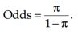
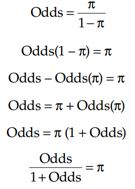
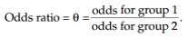
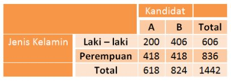
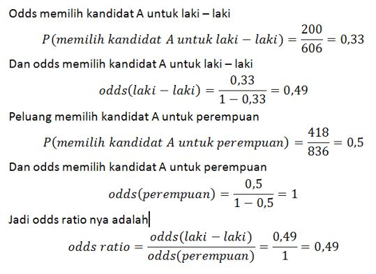

Odds adalah peluang terjadinya suatu kejadian dibandingkan peluang tidak terjadinya kejadian tersebut. Kalau peluang terjadinya kejadian dilambangkan dengan phi , odds adalah
Atau dapat ditulis
Odds ratio adalah adalah perbandingan dari dua odds. Odds ratio dikhususkan untuk pengukuran pada tabel kontingensi 2x2 atau tabel 2x2 yang merupakan subset dari tabel yang lebih besar.
Ada dua hal terpenting dalam melakukan interpretasi mengenai odds ratio, yaitu pertama kategori kejadian yang menjadi acuan (misalnya "sukses") dalam penghitungan odds dan kedua adalah pendefinisian grup atau kelompok sebagai "grup 1" dan "grup 2" dalam penghitungan odds. Pada contoh di bawah akan dihitung odds yang memilih kandidat A dan laki-laki sebagai grup 1.
 Dengan demikian odds laki-laki untuk memilih kandidat A adalah 0,49 kali daripada odds perempuan yang memilih kandidat A. Lebih sederhana interpretasinya dapat menjadi laki-laki memiliki kecenderungan sebesar 0,49 kali untuk memilih kandidat A dibandingkan dengan perempuan atau dengan kata lain laki-laki memilki kencederungan lebih kecil untuk memilih kandidat A dibanding dengan perempuan.